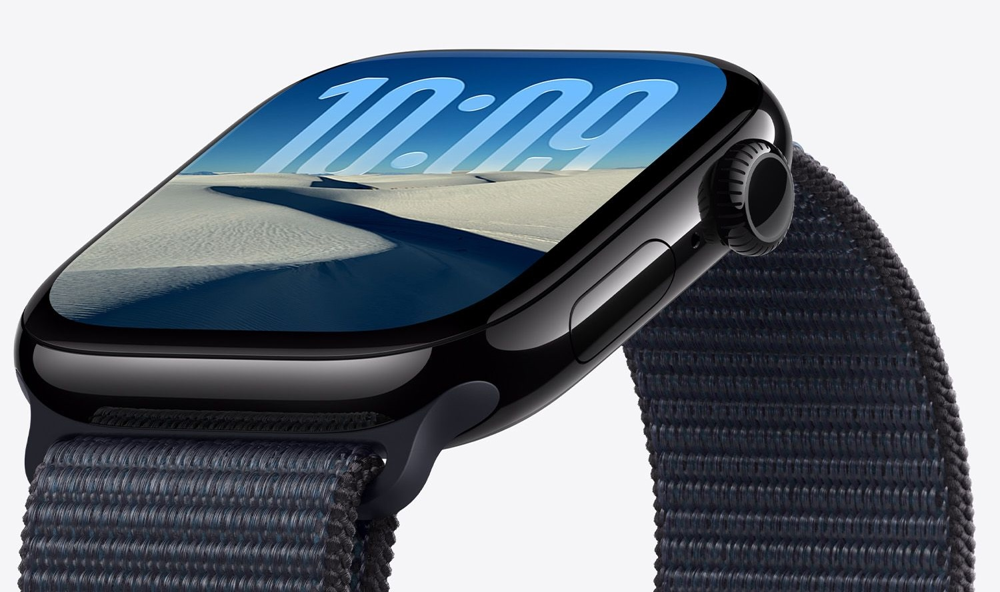
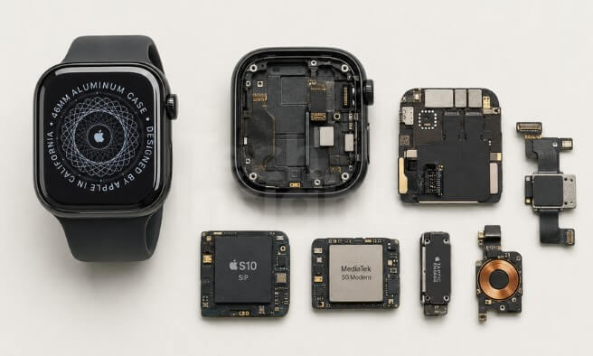
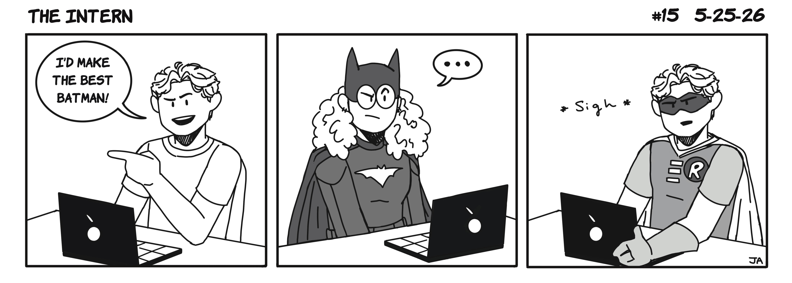
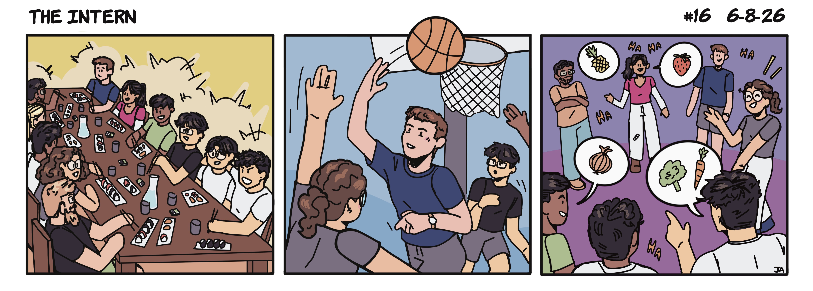
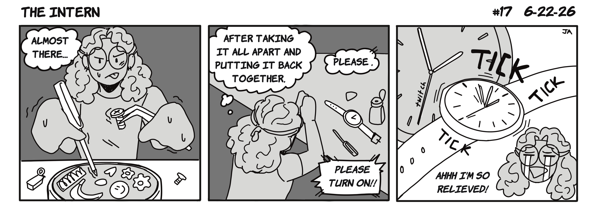
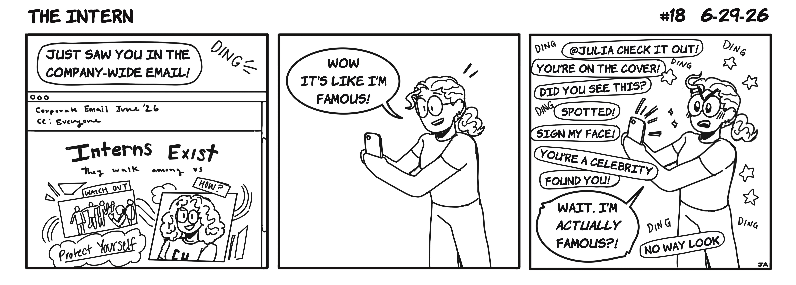
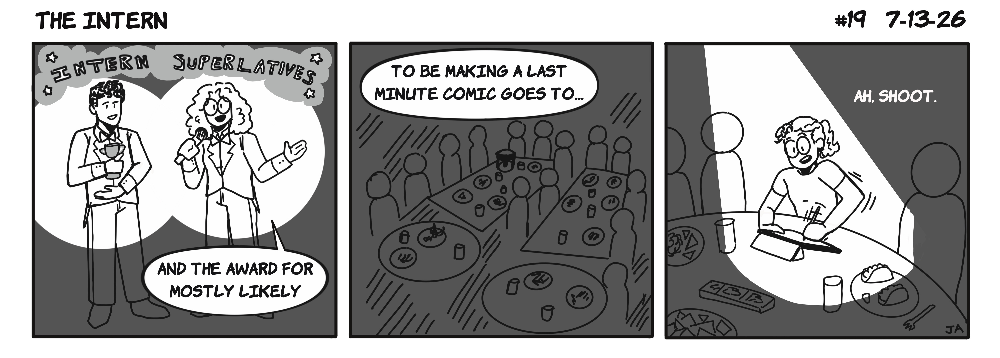
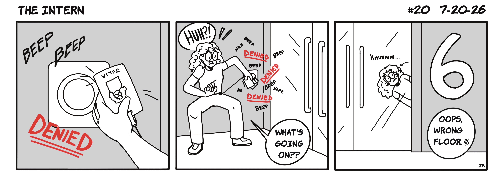
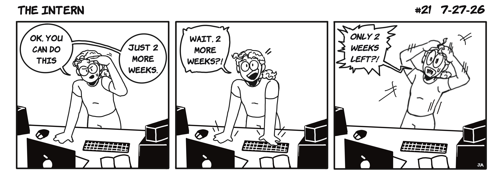

Though the details of these products remain confidential for now, I amm proud of the work I contributed and the growth I experienced both personally and professionally. I am excited to share more specifics once these products are released (at the scale of hundreds of millions) and grateful for all the incredibly talented people I got to learn from!
JAN – AUG 2026
Apple
Working with the Watch Product Design team on upcoming products was a life-changing experience! I was responsible for 5–10 concurrent mechanical design projects at a time. My work spanned housing modifications, sheet metal cowlings, snap-fit connections and watch band lug assemblies, taking designs from early concept sketches through detailed CAD in NX, DFM review cycles with vendors, rapid prototyping, and experimental validation. One major project I worked on was enclosure retention and system sealing. I brainstormed 10+ concepts across two design waves, performed hand calculations, created an analytical stiffness modeling tool, coordinated FEA simulations, and interpreted drop testing results. This thorough approach helped me analyze system risk, identify key failure modes, and synthesize all of the data into clear design recommendations that I presented to the broader team.
I was fortunate to gain exposure to multiple build programs and stages. My collaboration notably extended to the Watch Bands team, Health Sensing PD, Reliability team, and in-region China partners. Managing vendor DFM feedback loops and coordinating DOEs with external partners helped accelerate my technical communication and ability to catch issues early on. The technical depth I developed over this internship was equally matched by growth in communication and judgment. I became comfortable interpreting and presenting FEA results alongside experimental and analytical data, understanding not just what the numbers said but why, and what that meant for the design. I characterized materials through optical transmission and stress corrosion cracking studies, performed tolerance analyses, and developed an intuition for making product design trade-offs under real constraints like mass, space, manufacturability, and schedule.

Please enjoy comics tracking my experience at Apple! Reach out if you want to know the stories behind the comedic retellings!









A Look into my Additional Experiences!